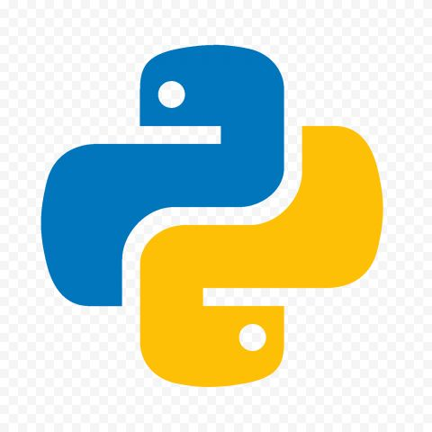
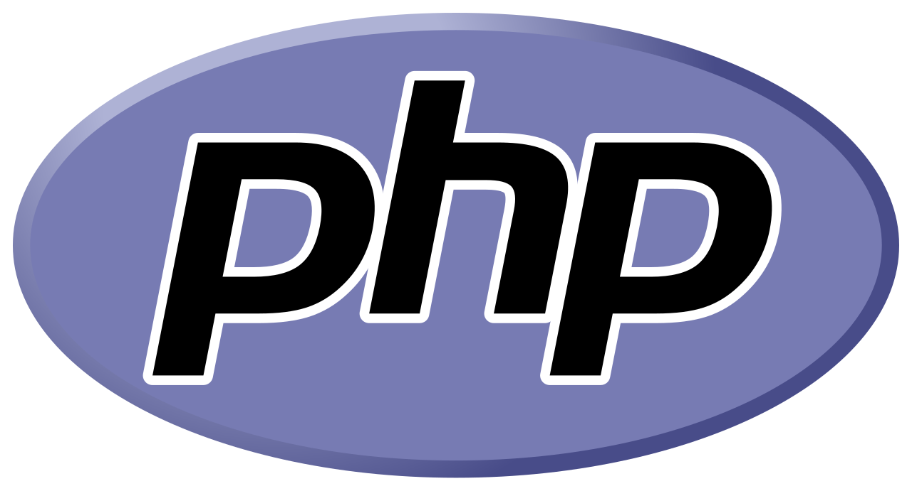
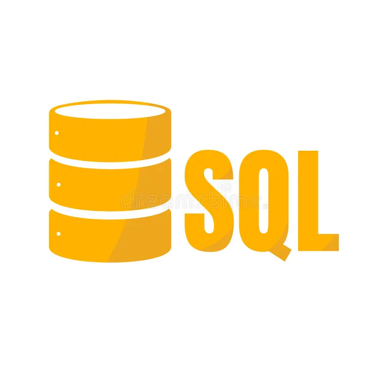

Bem-vindo ao meu Portifólio
Python

O python é uma linguagem de programação de alto nivel , interpretada, de script, imperativa, orientada a objetos, funcional, de tipagem dinâmica e forte mundialmente conhecida.
Ela pode ser aplicada em:
Ciencias de dados e IA: É a linguagem padrão para machine learning, Big Data e análise de dados utilizando bibliotecas como Pandas, NumPy, e PyTorch.
Desenvolvimento Web: Criação de back-ends robustos e APIs por meio de frameworks consagrados como Django, Flask e FastAPI.
Automação e Scripting: Escrita de scripts rápidos para automatizar tarefas repetitivas do sistema, web scraping e manipulação de arquivos.
PHP

O PHP (um acrônimo recursivo para Hypertext Preprocessor) é uma linguagem de script de propósito geral amplamente utilizada, focada principalmente no desenvolvimento web do lado do servidor (back-end).
Ela pode ser aplicada em:
Desenvolvimento Web Back-end: Execução de scripts no servidor para gerar páginas HTML dinâmicas, processar formulários e gerenciar sessões de usuários.
Sistemas de Gerenciamento de Conteúdo (CMS): É a base tecnológica que sustenta as plataformas mais populares da web, como o WordPress, Drupal e Joomla.
Aplicações Empresariais Robustas: Criação de APIs e sistemas corporativos complexos por meio de frameworks modernos como o Laravel e o Symfony.
Java 
Java é uma linguagem de programação orientada a objetos, multiplataforma, fortemente tipada e de propósito geral.
Ela pode ser aplicada em:
Aplicações Corporativas (Enterprise): Desenvolvimento de sistemas robustos e seguros para bancos, e-commerce e grandes empresas utilizando o ecossistema Jakarta EE e o framework Spring Boot.
Desenvolvimento Android: Tradicionalmente a linguagem nativa para a criação de aplicativos móveis no sistema operacional do Google, utilizando o Android Studio.
Sistemas Embarcados e IoT: Utilizado em bilhões de dispositivos inteligentes, desde cartões SIM e leitores de cartão até sistemas automotivos e TVs conectadas.
SQL

O SQL (acrônimo para Structured Query Language, ou Linguagem de Consulta Estruturada) é a linguagem padrão global utilizada para se comunicar com bancos de dados relacionais
Ela pode ser aplicada em:
Open-Source / Gratuitos: MySQL e PostgreSQL (líderes de mercado para aplicações web e sistemas modernos).
Corporativos / Proprietários: Oracle Database e Microsoft SQL Server (robustez e segurança para grandes corporações).
Leves / Mobile: SQLite (banco local embutido em aplicativos Android e iOS).
C 
C é uma das linguagens de programação mais influentes e duradouras da história. Por ser uma linguagem de médio nível, o C combina a eficiência e o controle de hardware da linguagem Assembly com a legibilidade e estruturação de linguagens de alto nível. Quase toda a infraestrutura computacional moderna — incluindo sistemas operacionais, compiladores e motores de jogos — depende direta ou indiretamente de C.
Ela pode ser aplicada em:
Sistemas Operacionais: Os núcleos (kernels) do Linux, Windows e macOS são escritos predominantemente em C.
Sistemas Embarcados: Softwares que rodam dentro de microcontroladores (em carros, relógios inteligentes, eletrodomésticos e dispositivos IoT).
Sistemas de Banco de Dados: Sistemas robustos como o MySQL, PostgreSQL e SQLite usam C em seus núcleos.
Base de outras Linguagens: Os interpretadores e compiladores de Python, PHP e JavaScript (V8) foram desenvolvidos em C/C++.
C++ 
C++ é uma linguagem de programação de alta performance, fortemente tipada e de propósito geral desenvolvida por Bjarne Stroustrup em 1979. O grande trunfo do C++ é o seu modelo de abstração de custo zero. Isso significa que ela permite programar usando conceitos avançados e complexos, mas compila o código de forma tão eficiente que o programa roda quase na mesma velocidade que se tivesse sido escrito diretamente em C ou Assembly.
Ela pode ser aplicada em:
Motores de Jogos (Game Engines): A Unreal Engine, usada para criar os jogos mais avançados do mundo, roda inteiramente em C++.
Navegadores de Internet: Os motores de renderização e execução do Google Chrome (V8/Blink) e do Mozilla Firefox são escritos em C++.
Sistemas de Alta Performance: Softwares de edição gráfica (Adobe Photoshop), sistemas de modelagem 3D (Blender) e plataformas de alta frequência de negociação financeira (HFT).
Inteligência Artificial e Compiladores: Embora os modelos de IA sejam chamados em Python, os bastidores de bibliotecas como TensorFlow e PyTorch são otimizados em C++.